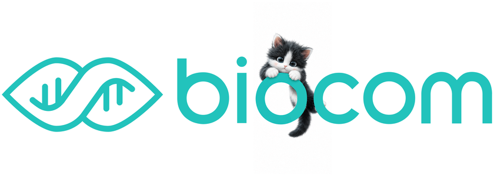

1분 만에
내 몸 상태 분석하기
간단한 문진으로 정밀 바이오 분석 서비스를 체험해보세요
A
좋음
B
양호
C
주의
D
경계
F
나쁨
STEP 1
1분 문진
STEP 2
AI 바이오 분석
STEP 3
맞춤 리포트 확인
시작하기
몇 가지 질문으로 딱 맞는 분석을 찾아드려요
요즘 가장 고민인 것은?
하나만 골라주세요
나에게 딱 맞는 분석은?
분석 받아보기
채취하기
바이오컴 AI가
당신의 데이터를 분석하고 있어요
🧍
카메라 준비 중…
분석 중
설명 듣고,
커피 받아가세요
앱 다운로드하면 드립커피 한 잔
QR로 앱을 설치하고, 부스에서 커피를 받아가세요.
안드로이드
아이폰
맞춤 건기식 · 도시락 체험
내 결과에 맞춘 건강기능식품과 저당·저속노화 도시락을 직접 설명 들을 수 있어요.
💡 맞춤 솔루션 보기
← 뒤로
🏠 홈
10
잠시 후 처음 화면으로 돌아갑니다
계속 보기